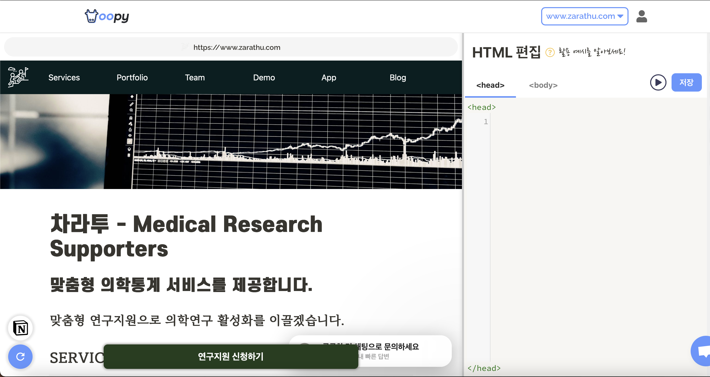

요약
기존 홈페이지
당사는 지금까지 Hugo 프레임워크를 통해 정적 웹을 생성하고, 이를 Netlify 서비스를 통해 배포하였습니다. 이 과정의 자동화를 위하여, Hugo 프로젝트를 GitHub로 관리하고, Commit이 있을 때 마다 Netlify의 자동 Build 기능을 통해 실시간으로 업데이트 할 수 있었습니다. 이 과정은 홈페이지 업데이트를 손쉽게 할 수 있다는 점에서 편리했지만, 선택한 테마에서 제공하는 기능만을 이용할 수 있다는 점, 다른 서비스들에 비해 커스텀 할 수 있는 영역이 부족하다는 점 등의 단점이 존재했습니다.
탐색
이에 Hugo와 Netlify를 대체할 수 있는 서비스를 탐색했습니다.
Jekyll 프레임워크와 GitHub Pages
정적 웹 프레임워크에서 가장 유명한 두 개의 프레임워크 중 하나는 Jekyll입니다. 당사는 소스코드를 GitHub로 관리하기에, GitHub Pages로 바로 배포가 가능한 Jekyll도 고려하였으나, 근본적으로 Hugo와 큰 차이가 없어 기존의 문제를 다 해결할 수는 없을 것이라고 생각해 포기하였습니다.
새롭게 웹 작성
새롭게 홈페이지을 작성하고 당사 서버의 남은 자원으로 호스팅 하는 방법도 있었습니다. 다만 빠른 제작이 필요했던 탓에 단기간에 만들기 힘든 부분이 있어 배제하였습니다.
Notion으로 페이지를 작성하고 oopy로 노션 페이지를 홈페이지로 가공 후 배포
최근 많은 기업체에서 채용 등 일부 페이지를 Notion으로 구축하는 사례가 늘고 있습니다. 예를 들어 왓챠나 클라썸같은 유명 스타트업이 있습니다. 다만 이들 또한 주 홈페이지까지 Notion을 사용하지는 않았습니다. 각 회사에서 서비스하는 제품이 정적 웹으로는 해결되지 않았기 때문입니다. 그러나 당사의 경우 주 홈페이지는 정적 웹으로 충분하고, 실제 서비스는 Zarathu App을 사용하기 때문에 큰 문제가 되지 않습니다.
또한 노션의 기본 기능 뿐 아니라, oopy에서 간단한 SEO, 스타일(테마), HTML(CSS, JS포함), 클린 URL, Google Analytics나 channel.io 등 플러그인까지 지원하기에 자유도와 편리함이 적절하다 판단했습니다. oopy와 비슷한 서비스 - 대표적으로 Super - 도 존재하나, 지원의 편리성과 가격을 고려하여 Notion과 oopy를 사용하기로 최종 결정하였습니다.
장점
커스텀 HTML
저희가 Notion과 oopy조합을 사용하게 된 가장 큰 이유는 커스텀 HTML(이하 CSS, JS 포함)입니다. 당사 홈페이지 하단의 ‘연구지원 신청하기’ 버튼은 oopy의 페이지별 HTML기능을 사용한 것입니다. oopy는 모든 페이지에 커스텀 HTML을 적용시킬 수도 있고, 페이지마다 개별적으로 적용할 수도 있습니다.  차라투는 위 사진처럼 media쿼리를 사용해 사용자의 환경에 따라 컨텐츠를 다르게 적용하기도 하였으며,
차라투는 위 사진처럼 media쿼리를 사용해 사용자의 환경에 따라 컨텐츠를 다르게 적용하기도 하였으며,

위 사진처럼 모든 페이지 하단에 연구지원 신청하기 버튼을 만들기도 하였습니다.
쉽게 적용하는 플러그인

대부분 JS를 통해 직접 설치하는 플러그인(Google Analytics나 channel.io)또한 위 사진처럼 쉽게 추가가 가능합니다.
클린 URL
 노션 주소를 공유할 때에는 위 사진의 복잡한 부분처럼 uuid형식으로 된 값을 사용합니다. 이는 효율적인 방법일 수 있으나, 심미적인 관점에서는 그렇지 않습니다. 또 링크를 누군가에게 공유할 때에도 링크만을 보고 대략적 내용을 유추할 수 없어 비 효율적인 면이 있습니다. oopy는 이러한 Notion의 URL을 쉽게 바꿀 수 있게 해 줍니다.
노션 주소를 공유할 때에는 위 사진의 복잡한 부분처럼 uuid형식으로 된 값을 사용합니다. 이는 효율적인 방법일 수 있으나, 심미적인 관점에서는 그렇지 않습니다. 또 링크를 누군가에게 공유할 때에도 링크만을 보고 대략적 내용을 유추할 수 없어 비 효율적인 면이 있습니다. oopy는 이러한 Notion의 URL을 쉽게 바꿀 수 있게 해 줍니다.
한계
그러나 Notion과 oopy 조합에 문제가 없는 것은 아닙니다. 우선 Notion 자체의 한계입니다. 노션은 다양한 커스텀을 지원하지 않습니다. Bootstrap를 통해 쉽게 구현할 수 있는 Grid같은 레이아웃 조절도 불가능하거나 매우 까다롭습니다. 네이게이션 바나 하단바를 Bootstrap 등을 통해 구현할 수는 있지만, 본문을 조정하기는 어렵다는 점에서 콘텐츠를 보여주는 것에 한계가 있습니다.
커스텀 HTML의 편의성 부재
Microsoft의 Visual Studio Code(VSCode)나 JetBrains사의 WebStorm같은 전문 프로그램은 물론이고, 최근에는 가벼원 편집기들 또한 자동 완성이나 괄호 자동 닫음 기능을 지원합니다. oopy의 커스텀 html 편집의 경우 아래의 사진과 같은 창에서 수행하게 되는데, 외부 편집기를 이용할 수 없어 Intellisence같은 기능을 사용할 수 없는 등의 단점은 있습니다. 다행히, 기초적인 오류는 경고 표시로 탐지가 가능합니다. 
부족한 SEO
우피는 자체적으로 SEO를 지원한다고 밝혔으나, 실제로는 Favicon과 og:image 설정, 메타태그 설정 등만이 가능하고, robots.txt는 일괄 변경만이 가능해 보여 해당 기능들의 추가가 필요합니다.
결론
새롭게 회사를 꾸리는 스타트업이고, 홈페이지에서 요구하는 큰 기능이 없다면 차라투와 같이 Notion과 oopy를 사용하여 홈페이지를 구축하는것도 좋은 선택일 것 같습니다. (노션의) 디자인과 구축 속도 두 마리 토끼를 다 잡을 수 있기 때문입니다. 그러나 장기적으로 홈페이지에 많은 정보가 추가될 수 있다면 처음부터 Hugo, Jekyll, Notion과 oopy같은 서비스보다는 직접 훔페이지를 제작하는 것이 효율적이리라 생각합니다.
당사는 당분간 Notion과 oopy조합을 계속해서 사용할 계획입니다.
Citation
@online{lim2021,
author = {Lim, Changwoo},
title = {Notion으로 {홈페이지} {제작후} {oopy로} {배포한} {후기}},
date = {2021-10-01},
url = {https://blog.zarathu.com/posts/2021-10-01-notionoopy/},
langid = {en}
}